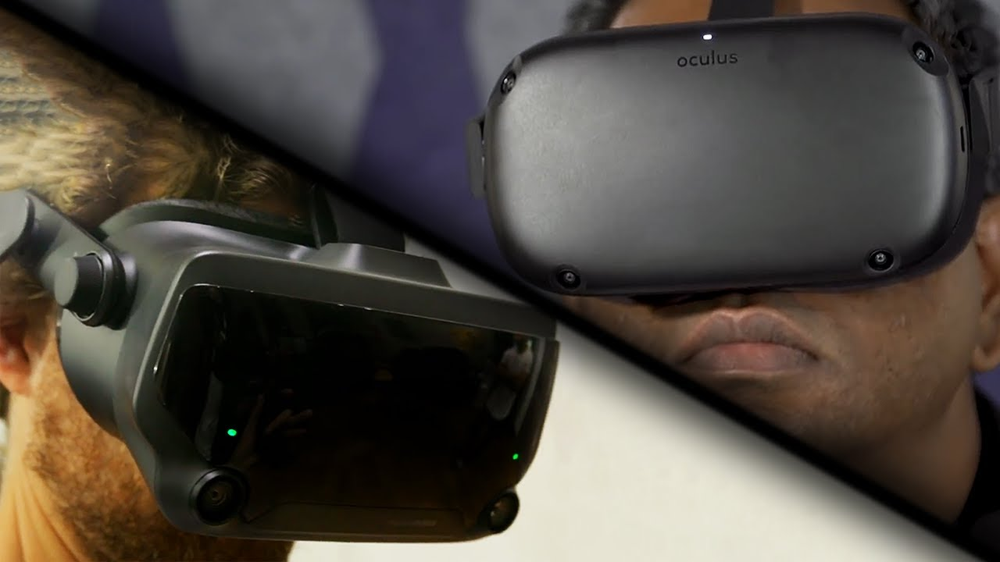

Wtedy to Palmer Luckey wraz z Brendanem Iribe założył Oculus VR,
a na serwisie Kickstarter pojawiła się kampania crowdfundingowa. Jej tematem były gogle VR Oculus Rift.

źródło: Kickstarter
Kampania okazała się ogromnym sukcesem. W 2016 wyszła finalna wersja Oculus Rift CV1 (Consumer Version 1) i konkurencyjne HTC Vive. Również wtedy wyszło PlayStation VR.
W 2017 roku wyszła seria gogli Windows Mixed Reality, które nie osiągnęły wielkiego sukcesu, dzięki czemu można je zdobyć teraz tanio (jak na VR).
W 2019 wyszły 2 zestawy, które bardzo rozwinęły VR.

źródło: Google Grafika
Oculus Quest - Gogle VR nie wymagające komputera/konsoli.
Valve Index - Gogle od Valve z wykrywaniem ruchów palców, odświeżaniem ekranu 120Hz i wyższą rozdzielczością ekranu, niż poprzednie HTC Vive.
Dzięki coraz lepszym grom (w tym Half-Life: Alyx, na którą gracze czekali ponad 12 lat.) i technologiom, VR jest dosyć dużą gałęzią przemysłu, która cały czas rośnie.